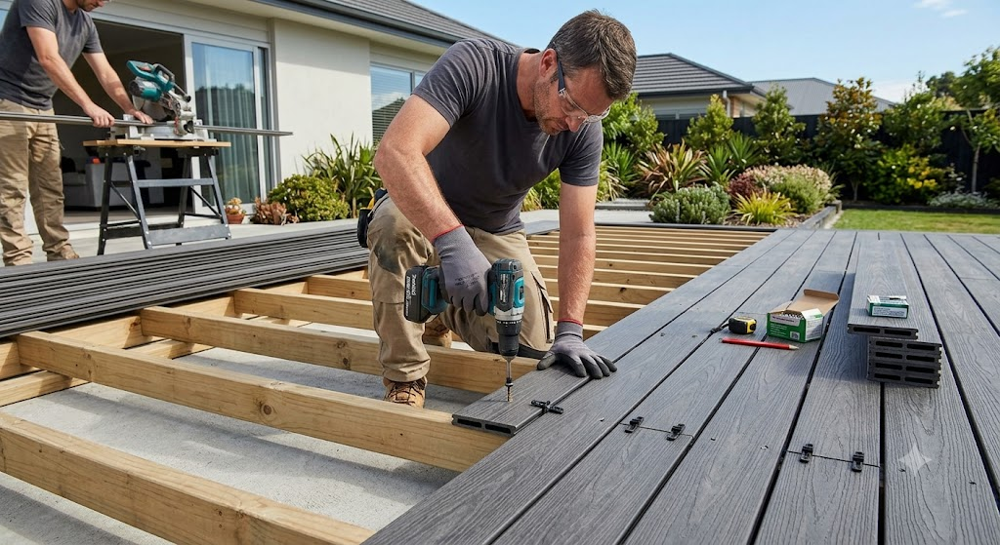

Revestimiento & Deck Exterior
Perfectos para fachadas, muros perimetrales, portones, galerías y cielorrasos.
WPC (Wood Plastic Composite) destaca por ser un material sumamente fácil y práctico de instalar, lo que permite que el propio cliente pueda llevar a cabo el proyecto sin necesidad de contratar mano de obra especializada. Gracias a su diseño intuitivo y a los sistemas de encastre o clips ocultos que suelen incorporar sus perfiles, el proceso resulta rápido, ordenado y sencillo de seguir. Con herramientas básicas que habitualmente se tienen en el hogar —como taladro, sierra y nivel—, cualquier persona puede lograr un acabado impecable, limpio y de aspecto profesional en poco tiempo, ahorrando costos significativos en la instalación
Ver video explicativo (WPC)
Perfectos para fachadas, muros perimetrales, portones, galerías y cielorrasos.
Perfecto para el área de la piscina y alrededores.
Solución arquitectónica moderna, liviana y duradera para revestir techos.
Descripción corta del tipo de material.
Descripción corta del tipo de material.
Descripción corta del tipo de material.